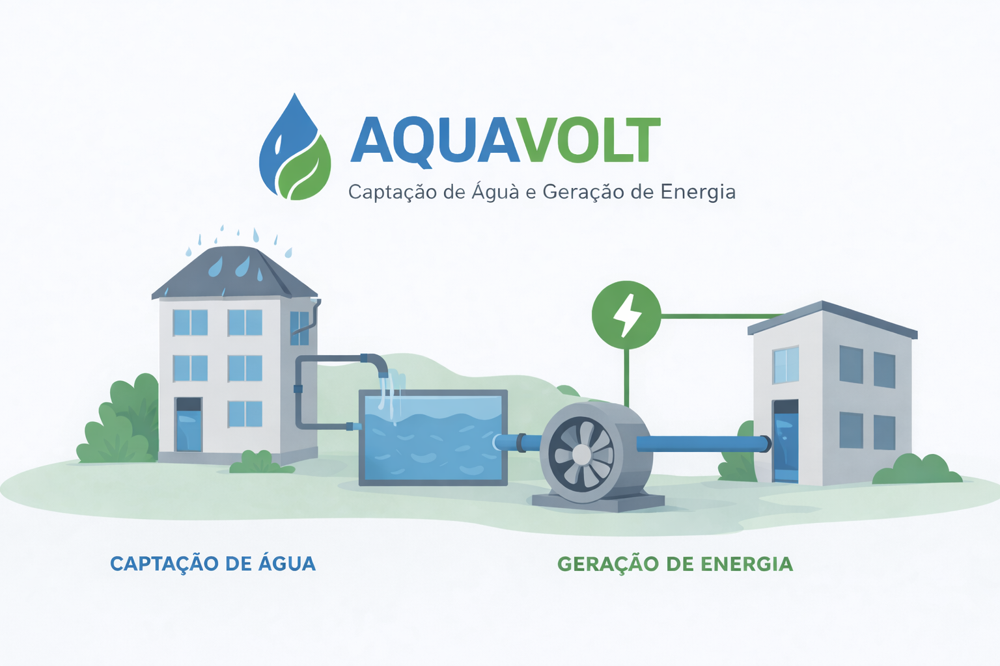

Projetos

Aquavolt
Problema: Alto consumo de água potável e energia elétrica em edifícios residenciais e comerciais, aliado à necessidade de soluções sustentáveis para reaproveitamento de recursos.
Solução: Desenvolvimento de um sistema de captação e reaproveitamento da água da chuva do próprio edifício, integrado a um sistema de filtragem e geração de energia por microturbinas hidráulicas.
Tecnologias: HTML, CSS, Arduino, sensores, automação e conceitos de sustentabilidade.
Resultado: Proposta sustentável voltada à redução do consumo de água tratada e ao aumento da eficiência energética, utilizando reaproveitamento hídrico e geração de energia renovável.
Objetivo: Criar uma solução sustentável capaz de captar, reutilizar e monitorar o consumo de água, além de gerar energia limpa para auxiliar no abastecimento do sistema.
Meu papel: Participação no desenvolvimento da proposta, elaboração da documentação técnica, definição da estrutura da solução e apresentação do projeto.

BevShop
Problema: Necessidade de um sistema de e-commerce capaz de organizar produtos, facilitar a navegação dos usuários e simular o funcionamento de uma loja virtual.
Solução: Desenvolvimento de uma aplicação web com integração entre interface e banco de dados, permitindo a organização de produtos e uma experiência de navegação mais intuitiva.
Tecnologias: HTML, CSS, TypeScript, Banco de Dados, Git e GitHub.
Resultado: Sistema de e-commerce funcional, com estrutura preparada para cadastro de produtos, navegação entre páginas e integração com banco de dados.
Objetivo: Criar uma plataforma de vendas online que simulasse o funcionamento de um e-commerce real, aplicando conceitos de desenvolvimento web e organização de dados.
Meu papel: Participação no desenvolvimento da interface, organização das páginas, integração com banco de dados e testes das funcionalidades da aplicação.

Ecoware
Problema: Elevado consumo de água tratada em granjas e estufas, além da necessidade de tornar esses ambientes mais sustentáveis e eficientes.
Solução: Desenvolvimento de uma proposta baseada na reutilização da água da chuva por meio de telhados verdes, combinada com automação utilizando sensores e controladores.
Tecnologias: Arduino, sensores, automação e conceitos de sustentabilidade.
Resultado: Proposta sustentável voltada à redução do consumo de água tratada, ao aproveitamento de recursos naturais e à automação de processos em granjas e estufas.
Objetivo: Criar uma solução capaz de reutilizar a água da chuva, reduzir o consumo de água pré-tratada e promover a sustentabilidade por meio de tecnologias limpas e automação.
Meu papel: Participação na pesquisa, desenvolvimento da proposta, elaboração da documentação técnica e apresentação da solução sustentável.